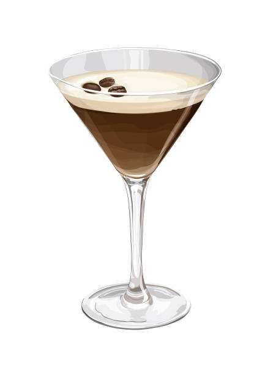
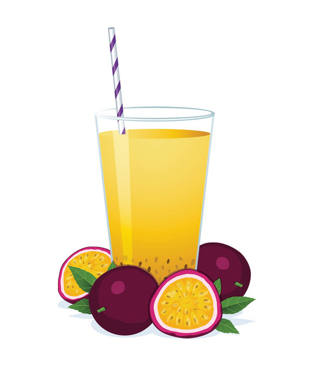

Founder's Favorites:
Michelle's Dill-icous Pickleback

Ingredients:
- 4 ounces Whiskey or Bourbon (Your choice of fine spirit!)
- 3 ounces Pickle Juice (The brinier, the better!)
- 1 ½ ounces Fresh Lime Juice (A zesty counterpoint)
- 1 ounce Simple Syrup (For a touch of sweetness)
- Pickle Spear and Fresh Dill to Garnish (The finishing touch)
Instructions:
- Combine all ingredients in a shaker with ice.
- Shake vigorously until well-chilled.
- Strain into a rocks glass filled with fresh ice.
- Garnish with a pickle spear and a sprig of fresh dill.
Enjoy responsibly, my friend! The briny pickle juice, balanced by the lime and sweetness, will create a truly unique and memorable cocktail experience.
Niki's Mocha Martini
Ingredients:
- 2 oz Vodka
- 1 oz Coffee Liqueur (e.g., Kahlúa)
- 1 oz Freshly Brewed Espresso
- ½ oz Simple Syrup (optional, for added sweetness)
- Ice cubes
- Garnish: Coffee beans (3 beans for luck)
Instructions:
- Combine vodka, coffee liqueur, freshly brewed espresso, and simple syrup (if using) in a shaker filled with ice.
- Shake vigorously to chill and create a frothy top.
- Strain into a chilled martini glass.
- Garnish with three coffee beans arranged in a triangle.
Niki's Mocha Martini is a smooth and indulgent cocktail, blending rich coffee flavors with a hint of sweetness and the perfect kick of vodka. Sophisticated and satisfying, it's the ultimate espresso martini experience. Cheers!
Sydney's Sunrise Mule
Ingredients:
- 1.5 oz Vodka
- 0.75 oz Fresh Lime Juice
- 0.75 oz Passionfruit Pulp (fresh or high-quality bottled)
- Top with Ginger Beer
- Garnish: Orange wheel and a sprig of rosemary
Instructions:
- Combine vodka, lime juice, and passionfruit pulp in a copper mug filled with ice.
- Top with ginger beer.
- Stir gently to combine.
- Garnish with an orange wheel and a sprig of rosemary.
The tartness of the passionfruit will beautifully complement the lime and ginger beer, creating a vibrant and tropical twist on the classic Moscow Mule. Enjoy!
Aida's Sparkling Citrus Sprite
Ingredients:
- 4 oz Sprite
- 2 oz Fresh Orange Juice
- 1 oz Fresh Grapefruit Juice
- ½ oz Fresh Lime Juice
- 2 oz Soda Water
- Orange slice and lime wedge for garnish
Instructions:
- Combine the Sprite, orange juice, grapefruit juice, and lime juice in a shaker with ice.
- Shake well to chill and mix the flavors.
- Strain into a tall glass filled with ice.
- Top with soda water for extra fizz.
- Garnish with an orange slice and a lime wedge.
Aida's Sparkling Citrus Sprite delivers a zesty and bubbly citrus medley, blending sweet and tart notes harmoniously with the effervescence of Sprite. Perfect for any occasion—refresh and enjoy!
Soline's All-Nighter Express
Ingredients:
- 2 oz Dark Rum
- 1 oz Fresh Pineapple Juice
- 0.75 oz Lime Juice
- 0.5 oz Agave Nectar
- 2 Dashes Angostura Bitters
- Top with Club Soda
- Garnish: Pineapple wedge and a brandied cherry
Instructions:
- Combine the rum, pineapple juice, lime juice, agave nectar, and bitters in a shaker with ice.
- Shake vigorously until well-chilled.
- Strain into a highball glass filled with ice.
- Top with club soda.
- Garnish with a pineapple wedge and a brandied cherry.
This cocktail offers a delightful balance of sweet and tart flavors, with the dark rum providing a warm, comforting base. The pineapple juice adds a tropical twist, while the club soda keeps things light and refreshing. The bitters add a touch of complexity, making it a sophisticated yet fun drink for a long night. Enjoy responsibly!